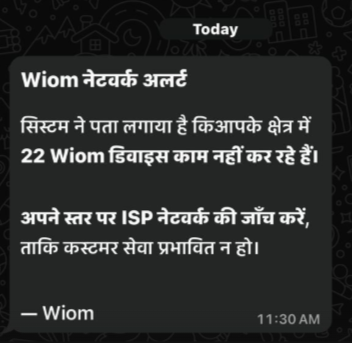
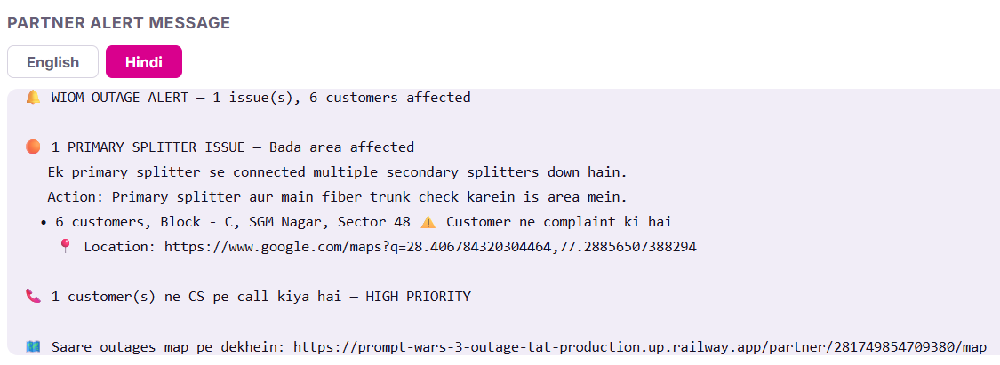

WIOM detects outages, but partners don't know what's wrong, can't act fast enough, and resolution depends on blind escalation rather than guided diagnosis.
Root causes differ — fiber cut, OLT, ISP backbone, power — each needing different actions.
Partners get one generic alert for all. No telemetry. No guided next steps.
15 devices go dark. Here's what unfolds.
WIOM detects the drop instantly. The partner? No idea.
First complaint comes in. Partner reacts to one customer, not the outage.
A second complaint from a different locality. Still treated as separate issues.
Partner asks customer to "switch on and off" — destroys signal, creates wrong expectations.
Two splitters in Locality A and B are down. One root cause, treated as many.
60 minutes from detection to fix. Could have been 15.
We have the data. It never reaches the person who needs to act.
15 devices lost ping at 2:15 PM. Correlated to two splitter failures across two localities.
Fragmented customer complaints. No root cause. No direction. "Nowhere to go. What was the error?"
Partner doesn't know what to do in time.
Root causes differ — fiber cut, OLT failure, ISP backbone, power outage — but partners receive one generic alert for all. No diagnosis, no next steps.
Diagnose the root cause automatically and deliver it in an actionable format — tell the partner WHY it's down, WHERE the fault is, and WHAT to do next.
Partner can't optimise bandwidth across multiple tickets.
When 15 devices go down, 15 separate tickets come in. The partner chases each one individually — sending technicians, making calls — when the root cause is a single splitter or OLT.
Group affected devices by geography and root cause. Partner sees one problem on a map, not twenty tickets in a list. Fix once — resolve many.
From a generic WhatsApp blast to an intelligent, actionable alert with map view.

Generic alert. No diagnosis. No next steps. "22 devices not working" — now what?

Root cause identified. Clustered by location. Action steps included. Map link provided.
Target: Cut resolution time by 50% and reduce outage incidents by 75%
Prompt Wars 3 · Supply Team